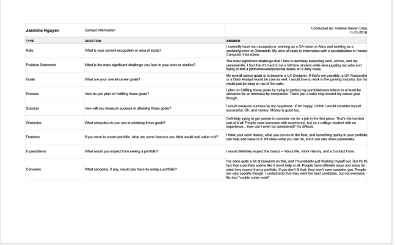
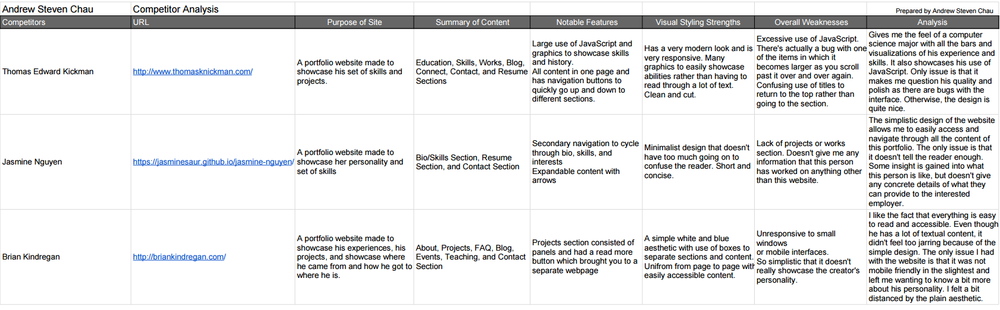
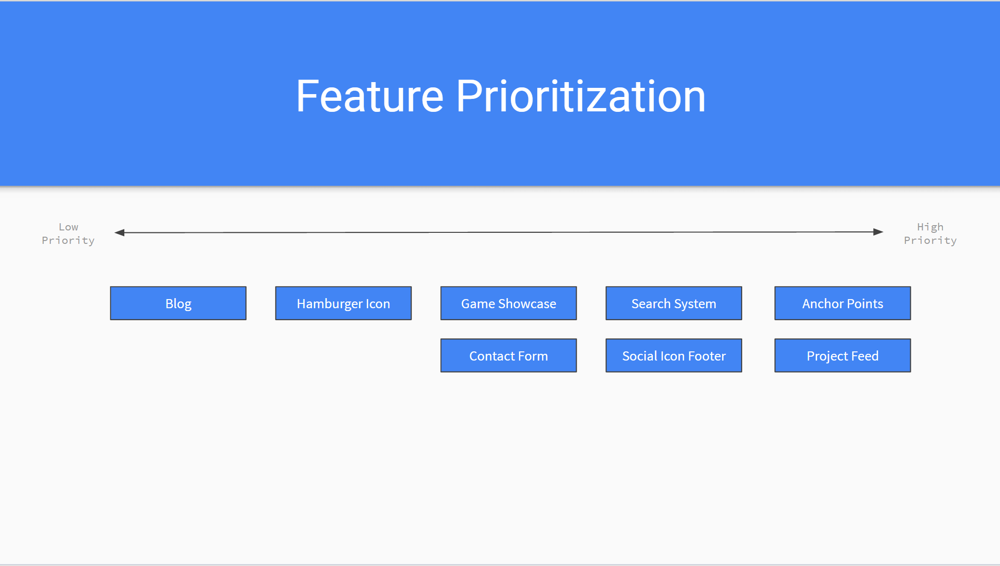
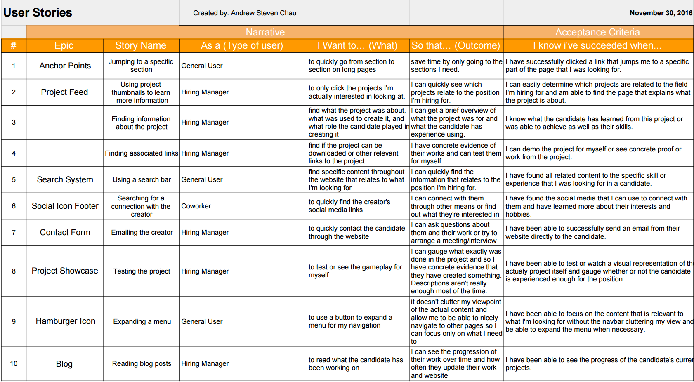
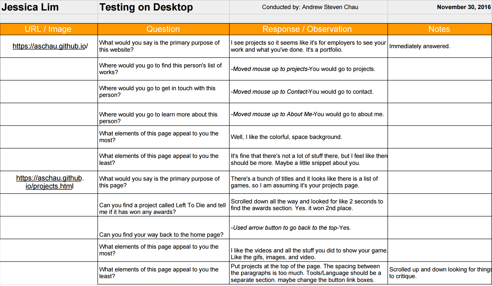
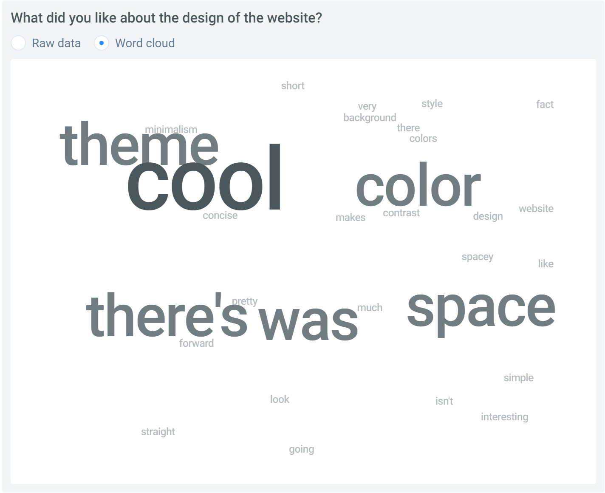
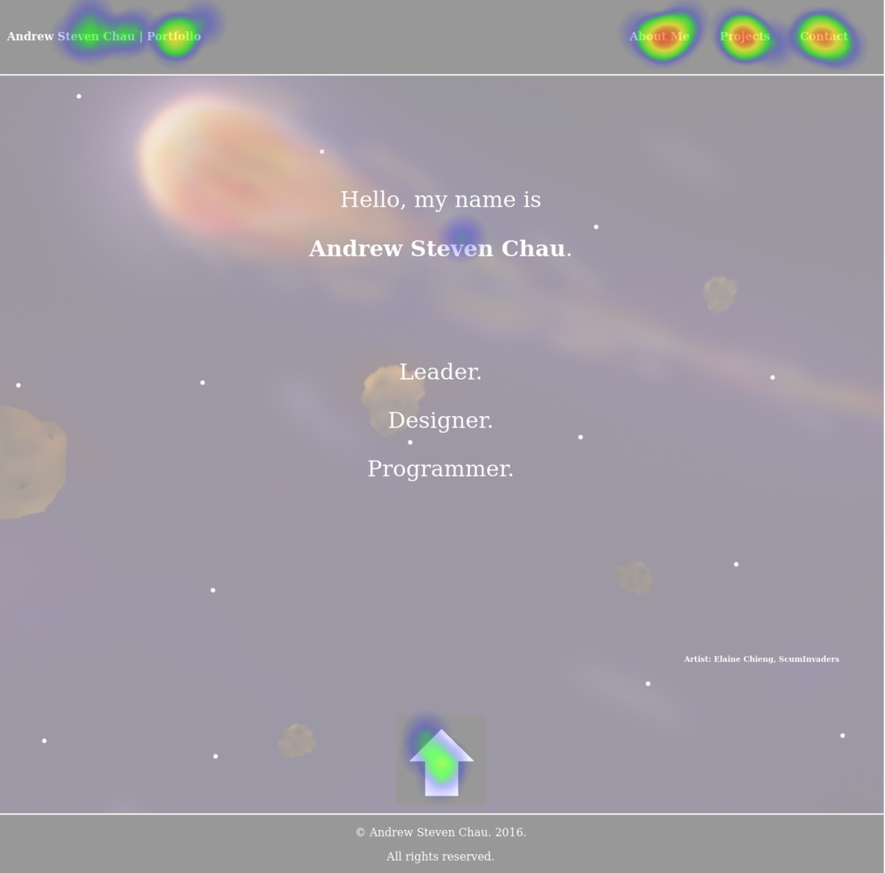

Portfolio Website (Nov 2016)
- User Research
- User Interviews:
- 
User interviews are important in order to to get a gauge of what people expect out of your product. It helps to interview a variety of stakeholders to get different viewpoints and to make sure you don't miss out on any possible users. Types of questions should concern both short and long term goals to understand what exactly they expect out of your project. I ended up interviewing 3 other students at UCI in order to see where their goals aligned compared to mine and to get an insight as to what I should put onto my portfolio.
- Competitor Analysis:
- 
It is extremely important to do a competitor analysis, especially for a portfolio, because the entire goal is to try to stand out and be better than the rest. It is an evaluation to see what competitors are doing, how they're doing it, and what's working versus what's not working. I chose to analyze three different portfolio websites. One was another student's in order to see what someone that was within my level of experience was showcasing on their website. I chose another one based on the fact that they had been in the gaming industry for years and that's where I aiming to be. The last one I chose was someone has had some general experience in the technology field in order to still also figure out how to appeal to companies other than game ones.
- Feature Value Matrix:

A feature value matrix is used to prioritize the features that you want to add to your project. You list the features that you potentially want to add and then give them scores based on their business value, user value, and technical effort. I chose features that I noticed that other portfolios tended to have and certain ones that I wanted to add previously, but didn't get the chance to.
- Feature Prioritization:
- 
I made a visual to display the order that I prioritized the features that I wanted to implement. The order is based purely on the feature value matrix and not my own personal preference. I feel like this visual is extremely helpful in building my interface as it clearly display what features I should focus on next and why I should I add them.
- User Testing
- User Stories:
- 
User stories help to focus on specific sets of features to make sure that they're catering to the user experience. They make the creator of the product think of the processes that different users will have to go through and why. By doing so, we can better design features to make this process easier or more efficient. I chose my user stories based on both new features I wanted to implement and existing ones to make sure that they would actually improve my interface or verify that they're beneficial to the user experience.
- Cognitive Walkthrough:
- 
A cognitive walkthrough is a process in which the designer has a user go through the basic uses of their project. It is important to do these because it ensures that users know how to use the interface without outside guidance and that they're doing it efficiently. If the user has to ask questions to get through a task that they're given, then something is not being correctly communicated to the user. Some challenges that usually come up while conducting walkthroughs are not anticipating some of the issues that specific features or design decisions would cause. The designer simply assumes that their interface is good because they themselves know how it works, but they might've actually made it overly complicated. The tasks for the walkthrough themselves may have also been poorly put together which might confuse the user further.
- User Test:
- 
This is the first test that I created for my website. I wanted to make sure I was giving off the right impression when users first entered my website from the home page. I asked questions about what they thought the website was about based purely on the home page to make sure I was making my intentions clear. I also asked questions about what they liked about the design of the page versus what they didn't like. The results were generally the same across the board. All testers knew immediately what the website was meant to display. As for the design, most people liked the simplicity of the page and the atmosphere it gave. The flaw that testers pointed out was that the design as whole didn't work in combination that well with each other, such as the font and the background.
- 
The second test I created was a click test to make sure that users were able to actually able to navigate through the website without my guidance. It tested whether or not they could tell what was clickable versus what wasn't, such as the links on the navigation bar. The tests went well and mostly everyone understood the functionality of the navigation and the scrolling arrow. The tests also revealed that users tried to click the bold text I displayed for my name, as they thought it would lead them to information about me.
- Summary of Findings
Overall, the user research and user testing was extremely helpful and I now understand why it is so important to do these tasks. The user interviews helped give me a kickstart as to what I should focus on for my website. I highlighted the main things that seemed to parallel the most between the interviews and incorporated those ideas into my website. Analyzing my competitors was also immensely helpful as it's always useful to pull ideas from other similar projects and figure out a way to incoporate it into yours. It helped me figure out what I liked and didn't like in a portfolio as well as avoid any issues I noticed in other websites. As for the feature value matrix and feature prioritization, I realized that certain features that I wanted to add were actually lower in priority than the other that I put down that I noticed in other people's websites. it's immensely helpful to actually write it out and visually see what you should do next versus just planning things out in your head.
As for the user stories, I felt like it gave the features I wanted to implement a lot more meaning. It emphasized exactly why those features were so important to add and how it improved the user experience. The cognitive walkthrough helped me confirm that the features I was adding made sense and was easily accessible and efficient to go through. The user testing highlighted the flaws in my design as well as confirm the design choices I was on the fence about keeping. I feel like user tests will usually always be the place that you'll make the most progress through the entire process of design as you'll actually be able to see your decisions in action and see if they were actually good or not.
Overall, I found the entire process illuminating and look forward to doing more testing after I implement the features that I developed based on the information. While most people liked the space theme that I went for in my design, there were a couple testers that questioned how it fit exactly with my goals. I understood their concerns, but from my own design standpoint I actually felt that it showcased my personality more even though it was a bit different and "a little bit out there." Because that's what space is. I want users to immediately come into my website and be able to see that I have large goals and "shoot for the stars" so to speak. Another major issue that was pointed out was with my font. Typography is always hard to get right the first or second time and many felt that it was too bland in comparison to the rest of the website. It didn't have the same personality that the website seemed to be portraying and felt extremely simple in comparison. I know that it's always a tediois process to take the time to research and user test, but it is so helpful that no designer should ever avoid it. There can be times where people will critique your entire design and it'll suck, but they're just trying to help you out. As a designer, you're going to be resistant to changes especially because you spent so much time trying to achieve a certain look, but it doesn't really matter as much if it looks good to you. What matters is that you're improving the overall user experience and many time you'll have to change the entire layout that you chose to satisfy that condition.
- Incorporation of Findings
I have already actually incoporated a couple of my findings into my website. One of the major things that people pointed out was the inconsistency between the font I originally used (Tahoma) with the rest of the website. It didn't really fit the space like theme of the background, so that was the first thing I set out to change. I wanted it to fit my space like theme while still having it suitable to represent my goals to become a developer, and I feel that I've found one that is fitting of both. Another huge issue that was pointed out was the background I used to display all my text in my previous design. It was a gray semi-transparent background that really clashed with the rest of my design. It just stood out and looked ugly and too blocky. I ended up changing it to a much darker background, just so the text would be more visible versus the background and so that it would fit better with the general theme. Other issues that were pointed out included the fact that certain pages were way too long, such as this projects page. As a result, I ended up putting each project into summaries in order to hide the details and have users decide for themselves which projects they would like to see. While testers like the fact that there was an arrow at the bottom of each page that allowed the user to automatically scroll back to the very top, many didn't like the way it was represented. Previously it was a giant arrow at the bottom of each page with a black background to stand out from everything else on the page, but many felt like it conflicted with the rest of the page or was a little bit tacky. As a result, I've moved it to be inside the footer, as that is always at the bottom of the page and already has a black background that fits with the theme. I also added some text above the arrow to make it as clear as possible that it brings you back to the top.
- Fonts are always a hard thing to get right because it can really change the overall look or feel of a website, so this might still potentially change, but for now I feel like this fits a lot better than my previous font. I feel like the black background for displaying text could still be improved as it still might be a little difficult to read some text since there's so much going on in the background, but for now I'm also satisified with the look that I've acheived as I feel it doesn't really ruin the flow of the website. I still think I plan on incoporating a separate page for each project as this page still takes a long time to load and I feel that the names aren't enough to be able to tell what the project is about. I might include a table of my projects with thumbnails of each along with the titles to represent each one, so they are more likely to be curious about one and click to learn more. The thumbnails would each link to another page on the website where I can display more information about the project. I might also figure out a way to tie it in already with my current layout for the projects, since it already provides a brief description, but it depends on how in depth I want to get about the process of each of my projects. As for the auto scroll arrow, I had some suggestions for it to always be visible on the screen and not only at the bottom of the page, so the user could quickly return from anywhere on the page, not just the bottom. I most likely plan on implementing this, but I ran into some issues when I initially tried to pull this feature off. I'll have to come back to it when I have more time.
- As for other features or issues that I want to resolve that were pointed out during the testing and research, I plan on implementing those changes when I get more time during my winter break. One of them includes changing the contact social media links to be black and white and smaller so it doesn't conflict with the rest of the design. Another is a search bar so users can quickly find information about me that they're curious about, whether it be to find whether or not I have experience with something or it's just some information that couldn't find manually on my website because there's a lot of information to sort through. Other features are listed on my feature value matrix and feature prioritization visualization, so I'll get to those eventuall as well.